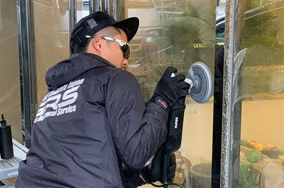
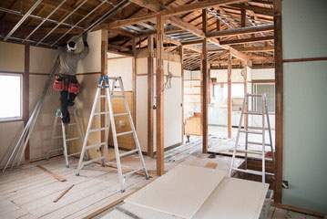
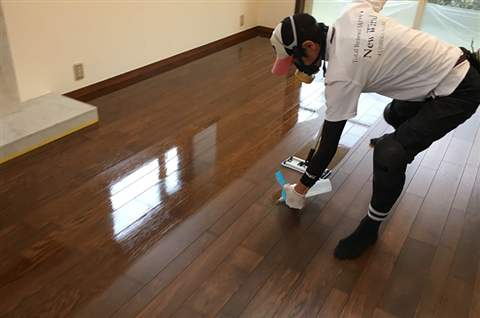
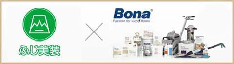
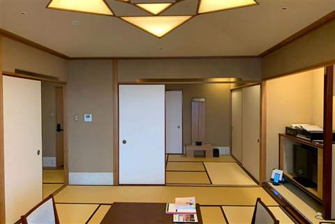
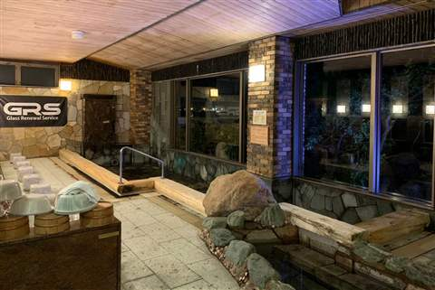
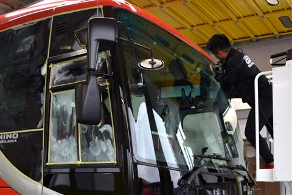
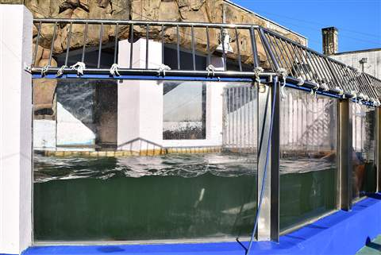
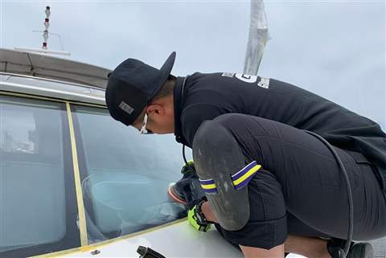
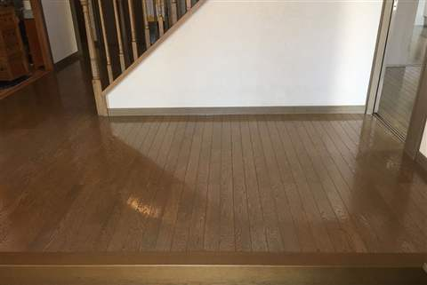

再生・研磨・コーティングの専門会社
無垢フローリングの傷・へこみ・日焼けから、住まい・店舗・ホテル・クルーザーまで。削り、磨き、コーティングする技術で、解体せずに新しい表情へ再生します。
昭和59年〜
創業以来の歴史
約78,000件
創業来の対応実績
830件超
茨城県内お取引実績
全国対応
出張施工が可能
家具の引きずり跡や落下物の傷。深いへこみも研磨で目立たなくなります。
水や油の跡、経年の黒ずみ。表面を削り、素材本来の色を出し直します。
家具やカーペットの跡だけ色が違う。全体を研磨し色ムラをリセットします。
水垢や経年劣化で曇ったガラス・建材。再生技術で交換せずに輝きを取り戻します。
SERVICE




無垢フローリング研磨事業では、世界的な木床メンテナンスブランド「Bona」の機材・仕上材を採用しています。
WHY FUJIBISOU
創業昭和59年から積み上げてきた、人との繋がりとご縁。
創業以来 約78,000件、茨城県内だけで830件超のお取引実績。
茨城県初の再生技術で交換コストを削減し、産業廃棄物・CO2削減に貢献。
一般家庭から5つ星ホテル・豪華客船まで対応する、創業来の技術の融合。
再生・付加価値・再使用の施工システムで、他社に断られた案件もワンストップ対応。
CONSTRUCTION EXAMPLES
住まいはもちろん、ホテル・温浴施設・観光バス・水族館・クルーザーまで。幅広い現場で培った技術で対応します。






全国からご依頼多数 ― 全国出張施工が可能です
他社様で断られた案件も、まずはお気軽にご相談ください。
USER VOICE
★★★★★
この度は丁寧なご対応と作業をしていただきありがとうございました。
★★★★★
床の傷がなくなっただけでなく、部屋も明るくなり、これから経年変化も楽しみたいと思っています。木田様始め、施工いただいた皆様には大変感謝しております。
★★★★★
生まれ変わったような美しい床で、気持ちの良い生活が出来ます。とても嬉しいです。私達は木田さんにお会い出来て幸運でした。
COMPANY
社訓
歩歩清風
ほほせいふう
ふじ美装が歩いたあとには、とてもさわやかな風が起きる。
志を持って地域社会に貢献し、今までと違う新しい生活環境を提供し、喜んでもらえる会社を目指す。感謝の気持ちを忘れない。
他社様で断られたものも、お気軽にご相談ください。お電話・LINE・フォームからお問い合わせいただけます。